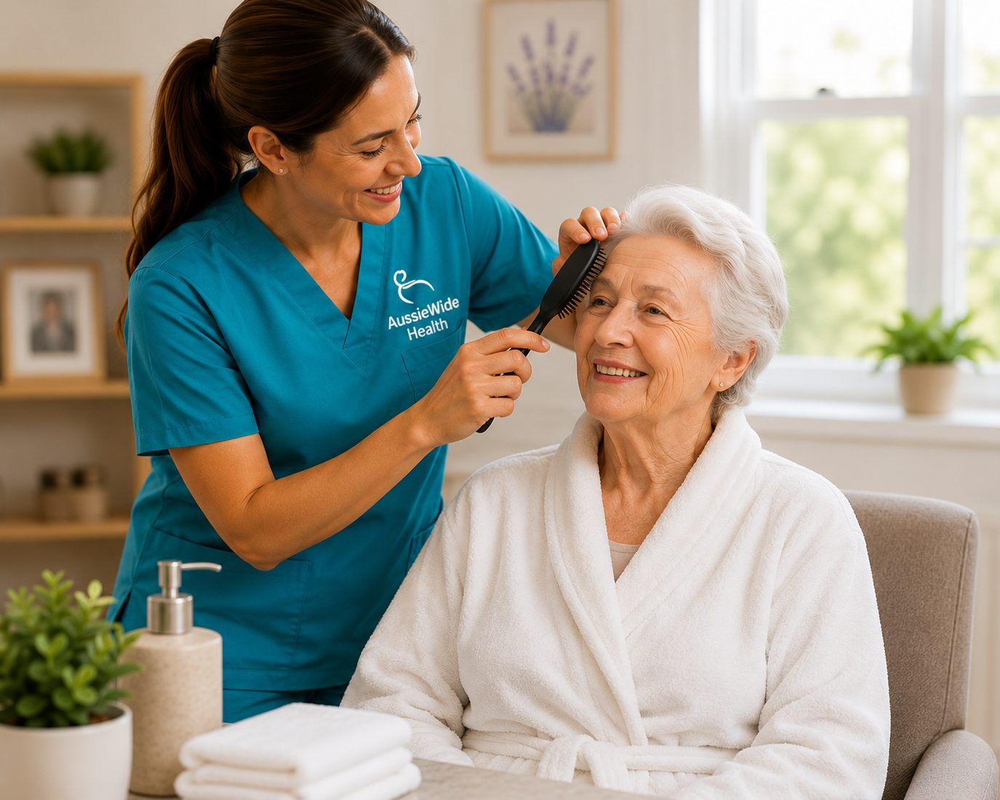
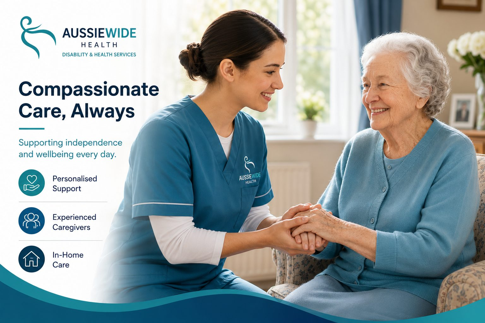
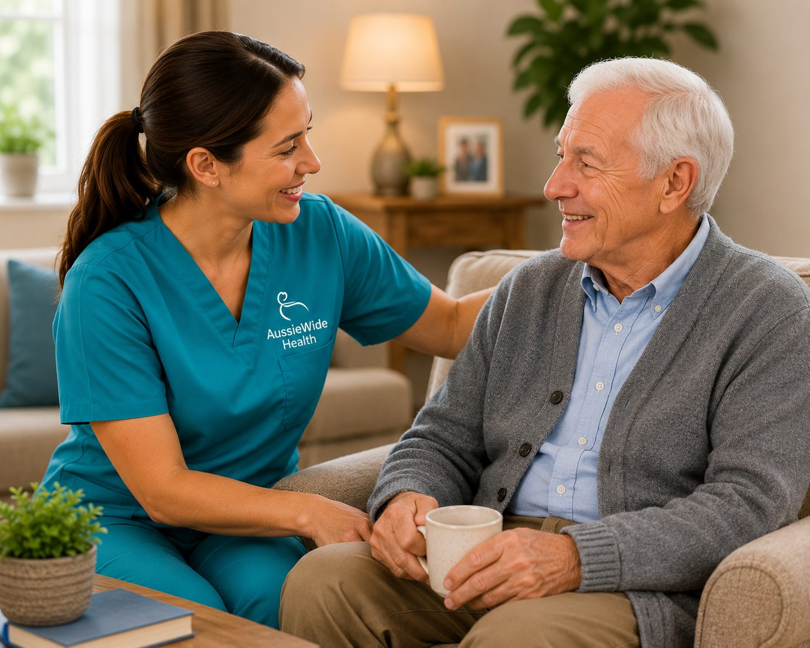
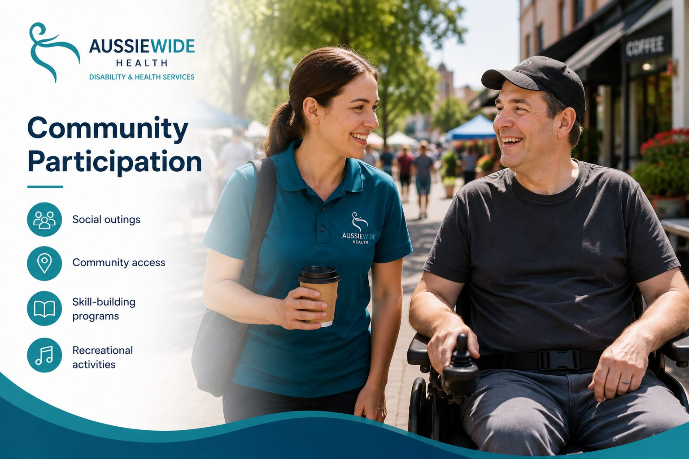
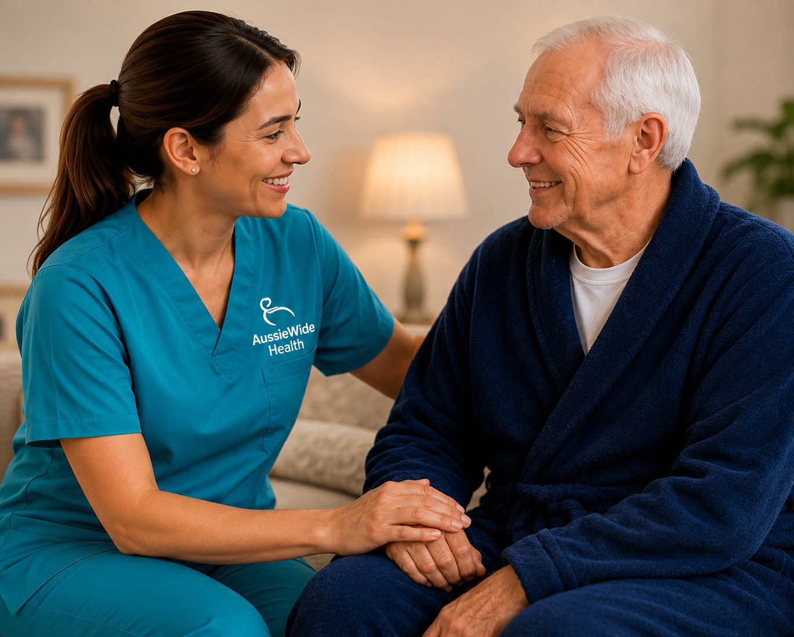
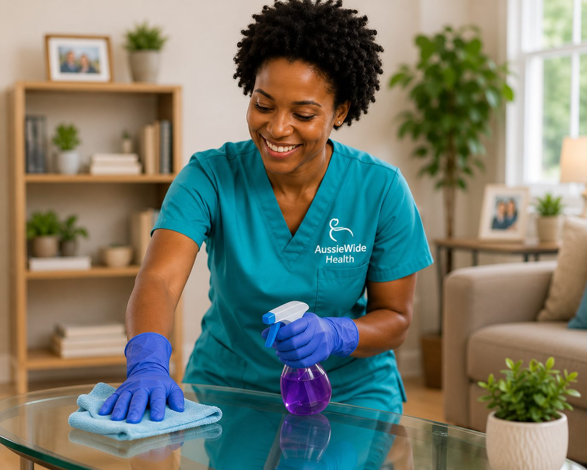
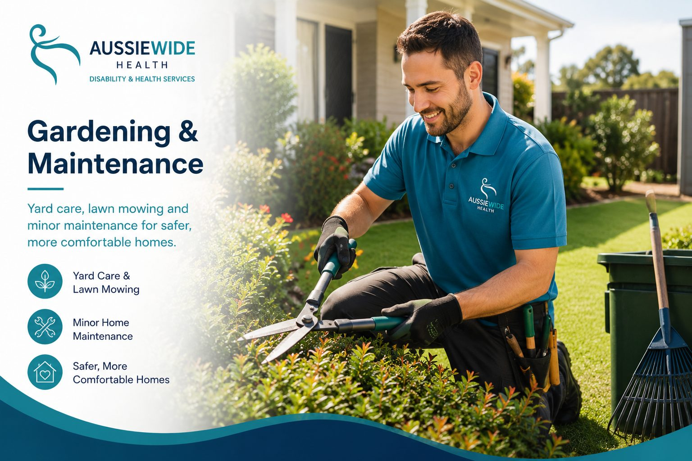
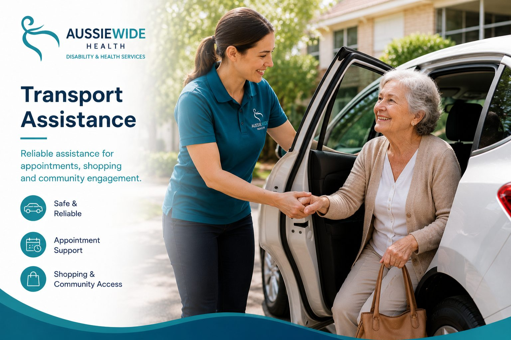
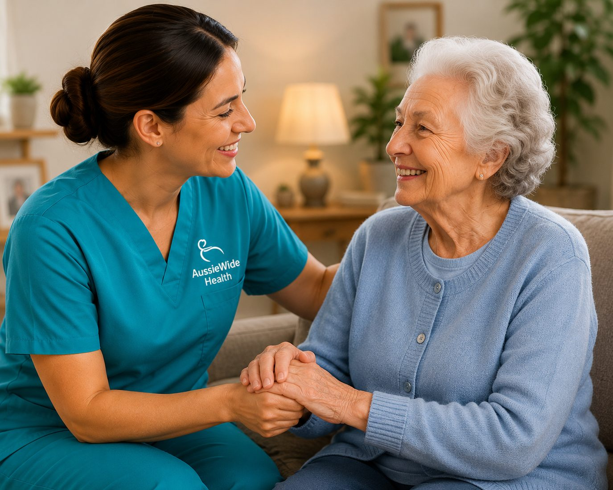

Personal Care & Daily Living
Respectful assistance with routines that support comfort, dignity and independence.

Professional, compassionate, and personalised disability support delivered with clinical expertise across Heathwood, Brisbane and surrounding Queensland communities.
Aussie Wide Disability and Health Services Pty Ltd is a Queensland-based provider delivering high-quality NDIS disability and healthcare services. Led by experienced Registered Nurses, we provide personalised support tailored to each participant's goals, routines and wellbeing.
Our team supports daily living, community access, nursing needs, transport, domestic assistance and home maintenance with professionalism and warmth.

From personal care and nursing to community participation and transport, services are shaped around safety, independence and quality of life.

Respectful assistance with routines that support comfort, dignity and independence.

Support to access social outings, recreation and skill-building opportunities.

Clinical care including wound care, medication support, continence and chronic disease management.

Cleaning, laundry and household support to keep home life manageable.

Yard care, lawn mowing and minor maintenance for safer, more comfortable homes.

Reliable assistance for appointments, shopping and community engagement.

Feedback-style highlights shaped around the qualities people look for in disability and health support: reliability, warmth, clinical confidence and respect.
"Support feels calm, respectful and genuinely centred on daily life. It helps the whole family feel more confident."
"Professional nursing knowledge makes a real difference when care needs are more complex and routines matter."
"Reliable visits, clear communication and a friendly approach help support feel consistent from week to week."
"The focus stays on dignity, choice and independence, not just completing a list of tasks."
"Community access feels easier when support is patient, practical and shaped around personal goals."
Tell us what you need and our team will guide you through the next step.